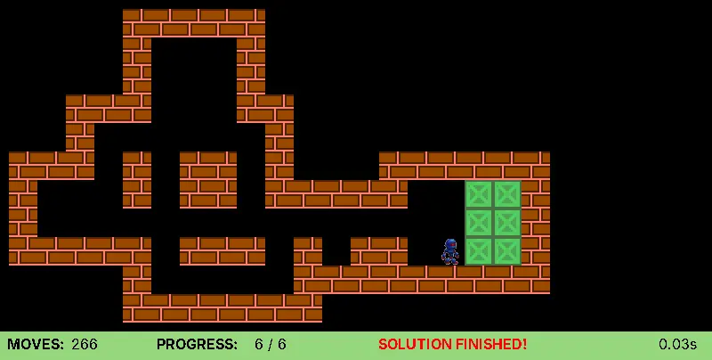

Security
AI Web App Scanner
Audits web apps built with LLMs for common security weaknesses, combining several detection approaches.
38 findings across 7 vulnerability classes · zero false positives on a hardened control
Pick what you came for. You can switch any time from the top bar.
Security student, software builder, curious human. The whole adventure: security, web and AI, plus the people and orgs along the way.
Offense, defense and secure code. President of DLSU's Information Security Organization and a CTF champion.
Full-stack apps, add-ons and automations, with security built in from the start.
LLM evaluation, NLP, reinforcement learning and search, plus automations that save real hours.
Internships, contract and freelance work · Remote
BS Computer Science, Major in Network & Information Security · Manila
STEM Strand · Top 10% of graduating cohort (GPA 96.40) · Gold Honors (G11), Silver Honors (G12)
Debate, publications, finance & school service · Cebu
Audits web apps built with LLMs for common security weaknesses, combining several detection approaches.
38 findings across 7 vulnerability classes · zero false positives on a hardened control

Find supporting or opposing research without leaving your Google document. Highlight text to look for credible, citable sources.
Built the first version: scoped OAuth permissions & secure token storage

A campus marketplace built with a five-person team. I led the frontend and strengthened the backend.
Secure auth, sanitized inputs, parameterized SQL, threat modelling from design to release
Custom ping, traceroute and a VoIP simulator exploring how networks communicate, down to raw ICMP sockets.
Implemented TCP/IP and ICMP protocol behaviour by hand

A peer-to-peer VoIP client with SIP call setup and teardown, and RTP/RTCP audio streaming.
Built with only the Java standard library

A full-stack EMR for a multi-clinic practice, built by a team of five.
Set up the monorepo; built clinics, appointments and documents; CI with Playwright; deployed on Render
A framework-free grade tracker that projects your GWA and ranks which courses to focus on.
Simulates scores against Dean's List targets
A module that rates a technical report's readiness level (TRL) and quotes the evidence for it.
Criteria score 0.694 → 0.781 on 99 USGS reports

Tags each word in Filipino social-media text as Filipino, English, code-switched or other.
95.7% token accuracy on the held-out test set

A Q-learning agent that learns to catch cats with different movement styles on an 8×8 grid.
Reward shaping, ε-greedy exploration and a greedy-loop repair pass

An A* search agent that solves Sokoban puzzles within a 15-second limit.
Prunes with reachability BFS, dead squares and freeze-deadlock detection
Team Prompt Patrol (5 members), Department of Computer Technology, De La Salle University.
Uncharted Knowledge, hosted by the Information Security Organization. Awarded to Sky Hannah Parado.
Team SlayTheFlagII placed 152nd out of 682 with 2,700 points.
NSSECU2 Advanced & Offensive Security, DLSU. Recon, enumeration, validation, controlled exploitation, priv-esc, CVSS v3.1 scoring & technical reporting.
Passed the ISC2 CC certification exam — foundational security principles, access control, network & operations security.